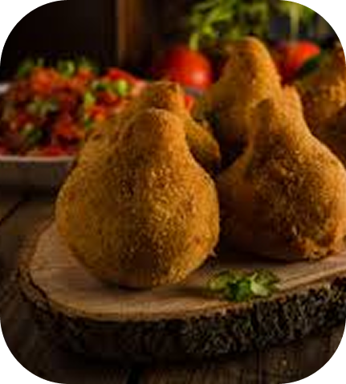

Receita destaque
Coxinha de mandioca
- 4 colheres (sopa) de manteiga
- 20 g de caldo de galinha sem glúten
- 300 ml de leite
- 700 g de mandioca bem cozida e amassada ou triturada no processador
- 3 xícaras de creme de arroz, ou um pouco mais
- 1 ovo
- Sal a gosto
- Fubá para empanar
gluten/lactose
-
Coxinha de mandioca
A coxinha de mandioca sem glúten é uma opção deliciosa e mais leve para quem quer aproveitar esse clássico salgadinho sem preocupações. Feita com massa de mandioca macia e recheio saboroso, ela é perfeita para lanches, festas ou qualquer hora que der vontade de algo gostoso e diferente.
Ver Mais -
Bombom de Morango

, O bombom de morango sem lactose é uma sobremesa irresistível para quem quer aproveitar esse doce clássico sem preocupações. Preparado com morangos frescos e um recheio cremoso feito com ingredientes livres de lactose, ele é perfeito para sobremesas, festas ou para matar a vontade de um docinho especial a qualquer hora do dia.
Ver Mais -
Torta salgada

A torta salgada sem glúten é uma alternativa saborosa e versátil para quem busca aproveitar esse clássico da culinária sem restrições. Com massa leve e macia, feita com farinhas especiais, e recheios variados que vão de frango desfiado a legumes frescos, ela é ideal para refeições rápidas, lanches ou festas, levando praticidade e muito sabor ao dia a dia.
Ver Mais -
Pão de queijo

O pão de queijo sem queijo e sem lactose é uma versão inovadora desse clássico mineiro, ideal para quem busca sabor e leveza sem abrir mão da tradição. Feito com polvilho e ingredientes vegetais que trazem textura macia e sabor marcante, ele é perfeito para cafés da manhã, lanches ou qualquer momento em que bate aquela vontade de um pãozinho quentinho e especial
Ver Mais -
Torta de banana

A torta de banana sem lactose é uma sobremesa deliciosa e leve, perfeita para quem quer saborear esse clássico sem restrições. Preparada com bananas maduras e massa macia feita com ingredientes livres de lactose, ela combina sabor, praticidade e um toque caseiro, sendo ideal para cafés, lanches da tarde ou para adoçar qualquer momento especial.
Ver Mais -
Bolo de laranja

O bolo de chocolate é uma sobremesa clássica e irresistível, fofinho por dentro e com sabor intenso de cacau. Perfeito para aniversários, lanches ou qualquer momento em que bate aquela vontade de um doce delicioso, ele combina sabor, aroma e textura em cada fatia.
Ver Mais -
Red Velvet

Os cookies de amendoim são biscoitos crocantes por fora e macios por dentro, com sabor marcante e irresistível. Perfeitos para lanches, cafés ou para aquele momento em que bate a vontade de um doce saboroso e nutritivo.
Ver Mais -
Cookie

O iogurte de coco vegano é uma opção cremosa e refrescante, feita com ingredientes totalmente vegetais. Perfeito para cafés da manhã, lanches ou sobremesas, ele combina sabor suave, leveza e praticidade em cada colherada.
Ver Mais